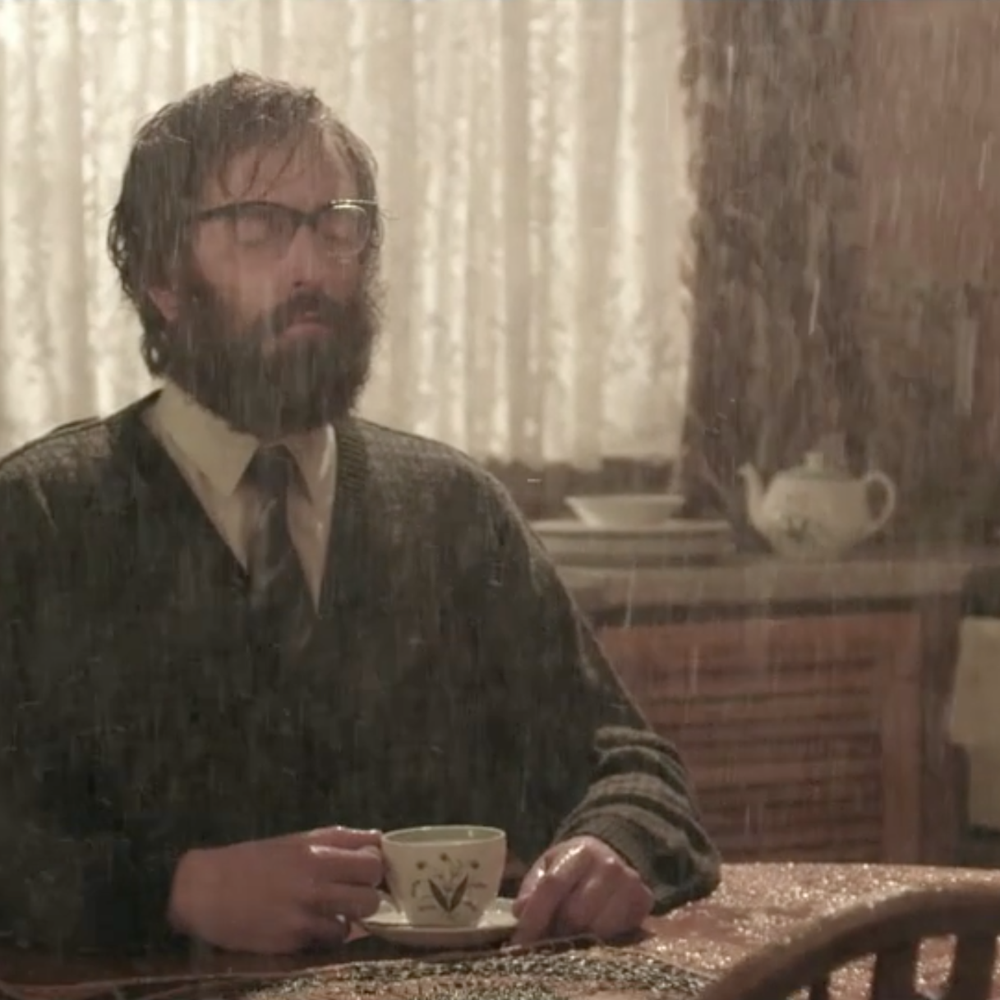

Notes On Blindness
Perma🔗 (via @cliftonlabrum)

John Hull, a writer and theologian, became completely blind in 1983. He kept a diary on an audiocassette. This film is a dramatization of some of of his words and thoughts. I loved it, and feel like it's a shame I didn't see it closer to its original release. I'm going to eagerly devour the story and additional material behind it.